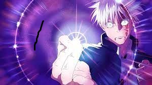

Hyperblog
Tu blog de cabecera un blog cool
Este es mi título!
Estamos de regreso en el curso de git y Github Esta vez lo terminaremos y nos volveremos mejores Vamos a ver y a usar ramas. mejor mensaje

Ser bueno en cualquier cosa requiere disciplina. Nada que valga la pena es fácil. El mejor consejo que le podría dar a mi versión más joven sería: Si tienes miedo, hazlo. Avanzar poco es mejor que no avanzar. Es preferible sufrir ahora y convertirte en el mejor de los mejores después que estar cómodo en el presente y sufrir en el futuro.
suscribete y dale like.